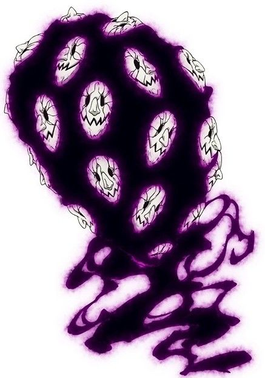
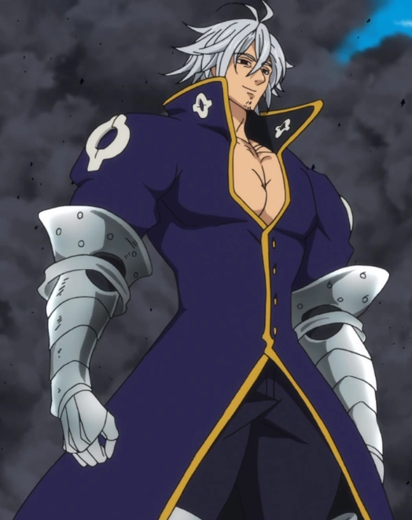
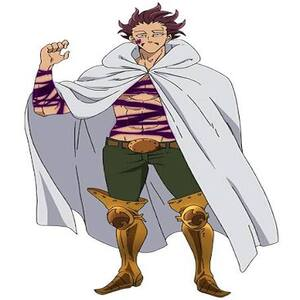

Grayroad é um Demônio de nível superior, pertencente ao Clã dos Demônios. Ela possui várias cabeças, sendo uma das características mais marcantes de seu visual. Sua habilidade principal é o “Curse”, que permite colocar maldições em pessoas que quebram determinadas condições. Grayroad é extremamente antiga, tendo vivido durante a época da Guerra Santa de 3.000 anos atrás. Ela faz parte dos Dez Mandamentos, recebendo o Mandamento do Pacifismo. O Mandamento do Pacifismo tem um efeito perigoso: qualquer pessoa que mate outra na presença de Grayroad tem sua vida drasticamente reduzida. Ela é capaz de criar e controlar pequenos demônios, podendo utilizar seus corpos para atacar ou se deslocar. Grayroad não possui uma forma humanoide convencional, diferentemente de vários outros membros importantes do Clã dos Demônios. Ela tem uma relação de lealdade com o Rei Demônio, assim como os demais membros dos Dez Mandamentos. Apesar de sua aparência incomum, Grayroad é considerada uma ameaça séria, principalmente por causa de suas habilidades mágicas e de seu Mandamento.

Estarossa é, na verdade, Mael, um dos Quatro Arcanjos do Clã das Deusas. Ele é o irmão mais novo de Ludociel e irmão de Tarmiel e Sariel. A identidade de “Estarossa” surgiu por causa de uma alteração nas memórias causada por Gowther. Estarossa carregava o Mandamento do Amor, originalmente pertencente a Mael. Seu poder mágico é o Full Counter, mas, diferente do Meliodas, ele consegue refletir principalmente ataques físicos. Ele foi responsável por matar Meliodas em uma de suas formas mais importantes durante a história? Não: essa parte é frequentemente confundida pelos fãs. A relação entre os dois é muito mais ligada à identidade falsa de Estarossa e ao passado de Mael. Mael era considerado um dos seres mais poderosos do Clã das Deusas e possuía o Sunshine, poder que depois passou para Escanor. Quando Mael recupera suas memórias, ele percebe que grande parte de sua existência como Estarossa foi construída sobre uma mentira. O nome “Estarossa” foi usado para esconder a verdadeira identidade de Mael e fazer os outros acreditarem que ele era filho do Rei Demônio. A revelação de que Estarossa é Mael é uma das maiores reviravoltas de Nanatsu no Taizai.
Zeldris é o irmão mais novo de Meliodas e também é filho do Rei Demônio. Ele é um dos Dez Mandamentos, ocupando o posto de líder do grupo. Seu Mandamento é o Piedade (Piety). Quem demonstra deslealdade diante dele pode acabar sendo obrigado a servi-lo. Zeldris possui uma relação muito próxima com Gelda, uma vampira e seu grande amor. Apesar de sua aparência fria, Zeldris é extremamente leal às pessoas que ama, especialmente Gelda e Meliodas. Ele recebeu o título de “Executor” por sua habilidade e disposição para cumprir as ordens do Rei Demônio. Zeldris utiliza uma espada como sua principal arma e é um excelente espadachim. Ele possui uma habilidade chamada Ominous Nebula, que cria uma espécie de campo de atração ao seu redor, puxando inimigos para perto e atacando-os em alta velocidade. Zeldris também consegue utilizar Full Counter, mas sua versão é diferente da técnica de Meliodas. Ele é considerado um dos personagens mais poderosos entre os demônios e consegue enfrentar adversários de altíssimo nível. Zeldris e Meliodas tiveram uma relação complicada por causa das expectativas do Rei Demônio, mas, no fundo, os dois se importam profundamente um com o outro. Uma das maiores ironias do personagem é que, mesmo sendo conhecido como um guerreiro extremamente cruel, seu principal objetivo pessoal era viver em paz com Gelda.

Monspeet é um dos Dez Mandamentos e representa o Mandamento da Reticência. Seu Mandamento faz com que aqueles que revelam sentimentos ou pensamentos ocultos de maneira inadequada sejam punidos, dependendo das circunstâncias. Ele é extremamente leal a Derieri, com quem possui uma relação muito próxima. Monspeet é conhecido por ser calmo, educado e reservado, principalmente quando comparado a outros membros dos Dez Mandamentos. Ele possui uma das maiores capacidades mágicas entre os demônios e é especialista em magia de fogo. Sua técnica Trick Star permite trocar a posição de objetos ou pessoas, tornando seus ataques bastante imprevisíveis. Monspeet possui seis corações, assim como outros demônios de alto nível. Destruir apenas um deles não é suficiente para matá-lo. Ele é capaz de utilizar a Hellblaze, uma chama negra característica dos demônios de alto nível. Monspeet tinha sentimentos por Derieri, mas não conseguia confessá-los diretamente. Uma das partes mais tristes de sua história é justamente sua relação com Derieri: os dois demonstravam grande carinho um pelo outro, mas demoraram muito para admitir seus sentimentos. Antes de se tornar um dos Dez Mandamentos, Monspeet já era um demônio extremamente poderoso e experiente. Apesar de sua aparência intimidadora, Monspeet é um dos personagens mais gentis e protetores entre os Dez Mandamentos.